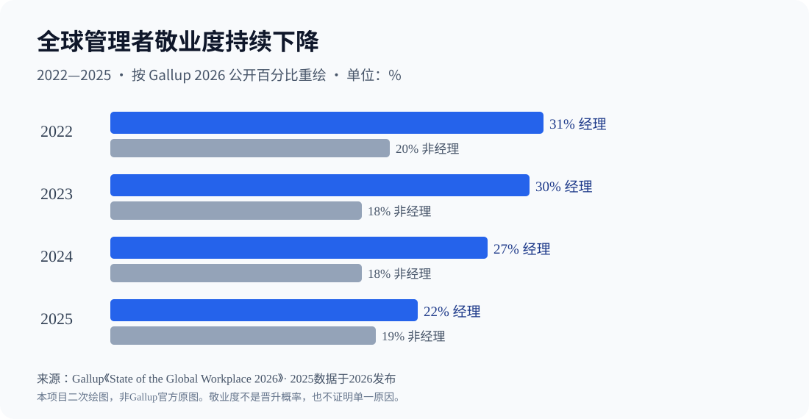
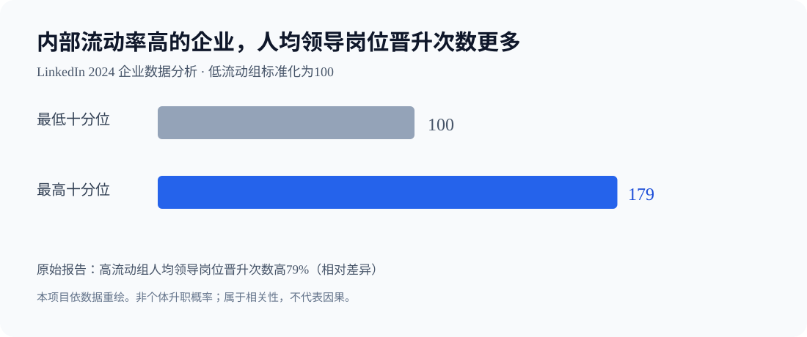

75%
75% 的受薪经理从基层小时工起步
沃尔玛于2026年6月披露：其受薪经理中有75%曾从小时工岗位起步；沃尔玛同时披露培训、学历/技能路径和岗位发展项目。
不能这样推：既不能推导一个基层员工有75%概率升经理，也不能推导中国互联网公司采用相同机制。
查原始研究 ↗ · 看证据边界只用作路线导航，不自动判断你的真实资质、晋升条件或招聘结果。
企业原始披露、研究数据、元分析。数字只支持对应的结论，不表示个人升职概率。
沃尔玛于2026年6月披露：其受薪经理中有75%曾从小时工岗位起步；沃尔玛同时披露培训、学历/技能路径和岗位发展项目。
不能这样推：既不能推导一个基层员工有75%概率升经理，也不能推导中国互联网公司采用相同机制。
查原始研究 ↗ · 看证据边界LinkedIn 2024企业级观察：内部流动率最高十分位企业的人均管理岗位晋升数量，比最低十分位企业高79%。
不能这样推：相关性，不代表“多参加轮岗可提升79%个人晋升概率”；可能有组织规模、人才质量等混杂变量。
查原始研究 ↗ · 看证据边界Lacerenza等发表于2017年的元分析整合335个独立样本，领导力培训在学习、迁移和结果等指标上总体有正向效应，效果随设计方式不同而变化。
不能这样推：培训改善管理学习/绩效指标不等于能够预测高管升职；各研究设计和场景有差异。
查原始研究 ↗ · 看证据边界Google Project Aristotle分析180个团队（115个工程项目组和65个销售组），识别与团队有效性相关的五个动态因素：心理安全、可靠性、结构清晰、意义与影响。
不能这样推：相关研究，不证明照抄Google会议方式就必然提升KPI；也不等于群体成员素质不重要。
查原始研究 ↗ · 看证据边界Gallup 2026全球职场报告显示：2025年全球经理敬业度22%，非经理为19%；经理敬业度由2022年的31%降至2025年的22%。
不能这样推：不是个人升职概率、管理技能等级或“中国经理不快乐的精确比例”。
查原始研究 ↗ · 看证据边界McKinsey 2019年CEO研究使用覆盖70国、24行业、约3500家上市公司和7800位CEO、25年数据的数据库，提出战略、组织、团队、董事会、外部利益相关者及个人效能六大职责。
不能这样推：无法直接推导一个基层员工的七步晋升公式；CEO职责不能原样套到小型团队主管。
查原始研究 ↗ · 看证据边界

每项任务都包含动作、完成证据和卡住后的替代路径。对没有权限的事情，不建议越权执行。
84 项
无账号 · 本地保存 · 随时导出
每维0—3分：0没有案例，1参与，2独立交付，3能复用或带人。分数只是自我复盘索引。
没有验证过的心理测量效度，不能用来断定你是否适合高管，也不能预测薪酬或晋升。
别一次同时攻克所有短板。填三个真实、可验收的重点，导出并每周复盘。
真实材料应保存在自己合法控制的私有目录；公开分享前做好脱敏。
相关理论参考公开研究与法条。作者设计的7阶段和自评表并非任何机构认证的职业晋升量表。